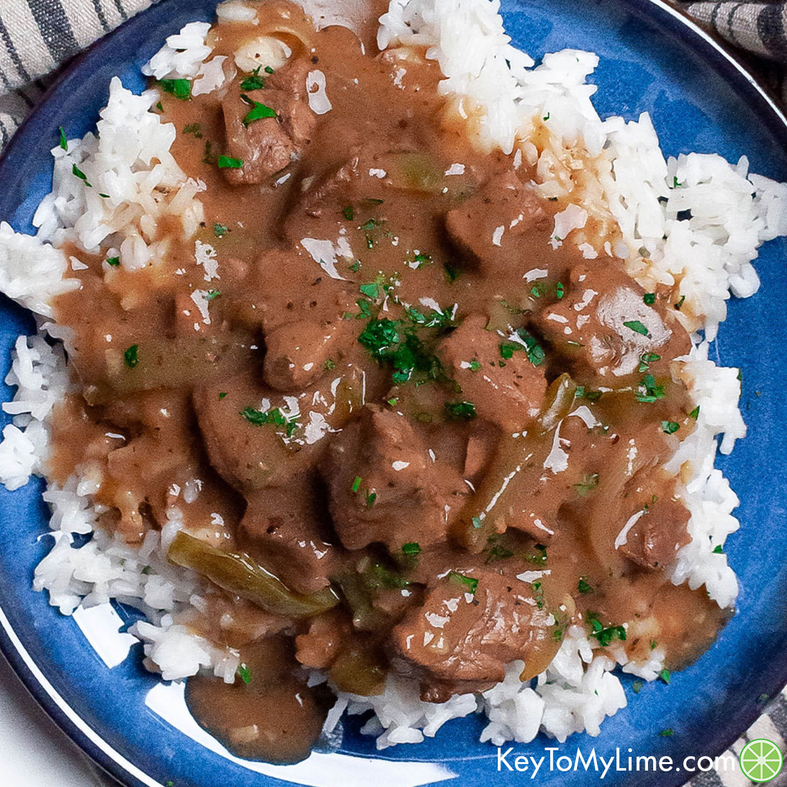

Chuck Roast

Tender chuck roast cooked in gravy and served over rice.
This Crock Pot Roast recipe is easy to make with potatoes, carrots, and thick and flavorful gravy. The meat is moist and full of flavor, your family will love this home cooked meal!
Ingredients
- Chuck Roast
- Flour
- Olive Oil
Meat Seasoning
- Brown Sugar
- Pepper
- salt, garlic powder, onion powder,chili powder, paprika
Gravy
- Beef Broth
- Chicken Broth
- Bouillon cube
- Onion Powder
- Garlic Powder
- Soy Sauce
Sides
- Baby Potatoes
- Carrots
For the End
- Corn Starch
- Unsalted Butter
Cooking Instructions
- Pat roast completely dry. Combine seasoning ingredients and massage it onto all sides of the roast, followed by the flour.
- Heat olive oil in a large pan over medium-high heat. Once the oil is shiny and heated, add the roast and sear on each side for 2-3 minutes, until a brown crust has developed. Decrease heat slightly if needed during cooking. Remove from heat and set aside.
- Whisk together the gravy ingredients and add some of it to the skillet that you used to sear the roast. Use a silicone spatula to "clean" the bottom and sides of the skillet, this will give the gravy more flavor. Transfer it to the slow cooker along with the remaining gravy mixture, followed by the pot roast and any juices from the plate.
- Cut the potatoes in half or thirds of equal size. (If 1-2 inch potatoes, you can leave them whole.)
- Peel the carrots and slice them into halves or thirds. Very thick carrots can also be sliced in half lengthwise.
- Arrange the potatoes around the roast and top with carrots. Place the lid securely on top and resist the temptation to open it during cooking as you’ll lose a lot of heat.
- Cook on high for 5-6 hours or on low for 8-10 hours.
- Carefully remove the carrots, potatoes, and the roast and set on a serving platter. Tent with foil.
Prepare Gravy
- Use oven mitts to lift the crock and transfer the juices to a saucepan, OR, if the crock is stovetop safe, you can place the crock right on the stovetop.
- Bring the juices to a boil. Whisk together the corn starch with cold water until completely combined. Gradually add it to the gravy and whisk continuously to incorporate.
- Decrease heat to low and simmer until ready to serve. It will continue to thicken. Add a few drops of Kitchen Bouquet browning and seasoning sauce if a darker color is preferred. Swirl in 1 tbsp. cold butter prior to serving.
- Season carrots/potatoes with salt and pepper if desired and serve!